Programación
Tema 2: Fundamentos básicos de la programación
Índice
- Introducción
- Salida de datos por pantalla
- Variables e identificadores
- Tipos de datos
- Lectura de datos desde teclado
- Operadores y expresiones
- Conversión de tipo
- Comentarios
- Estructuras selectivas
- Estructuras repetitivas
Introducción
En este tema vas a aprender a utilizar variables con el tipo de dato más adecuado, a operar con ellas y a ejecutar de forma condicional un conjunto de instrucciones.
¡Las bases de la programación!
Índice
- Introducción
- Salida de datos por pantalla
- Variables e identificadores
- Tipos de datos
- Lectura de datos desde teclado
- Operadores y expresiones
- Conversión de tipo
- Comentarios
- Estructuras selectivas
- Estructuras repetitivas
Salida de datos por pantalla
Funciones
Escribir por la salida estándar (pantalla):
- System.out.print("texto");
- System.out.println("texto");
- System.out.printf("texto %args", arg, ...);
Salida de datos por pantalla
Colorear texto
Mediante código ANSI de escape (\033[ o \u001B[) seguido del código de color (31, 32, 33...) y la letra m. (+info)
public class Colores {
public static void main(String[] args) {
System.out.print("\033[33m mandarina");
System.out.print("\033[32m hierba");
System.out.print("\033[31m tomate");
}
}
Salida de datos por pantalla
Caracteres especiales
Con \u seguido del código Unicode como 266A o 266B. (+info)
public class CaracteresEspeciales {
public static void main(String[] args) {
System.out.print("Corchea: \u266A");
System.out.print("Doble corchea: \u266B");
}
}
Salida de datos por pantalla
Formatear salida
Utilizando la máscara correspondiente (%s, %d, %f...) con la función printf. (+info)
public class SalidaFormateada {
public static void main(String[] args) {
System.out.printf("El número %d no tiene decimales.\n", 21);
System.out.printf("El número %f sale con decimales.\n", 21.0);
System.out.printf("El %.3f sale exactamente con 3 decimales.\n", 21.0);
System.out.printf("Soy %s y tengo %d años.\n", "Eladio", 39);
}
}
Índice
- Introducción
- Salida de datos por pantalla
- Variables e identificadores
- Tipos de datos
- Lectura de datos desde teclado
- Operadores y expresiones
- Conversión de tipo
- Comentarios
- Estructuras selectivas
- Estructuras repetitivas
Variables e identificadores
Identificadores
- Es el nombre que damos a una variable.
- Java distingue mayúsculas de minúsculas: (num != Num)
- Se escribe según la norma lowerCamelCase.
- Primer carácter: letra. También _ o símbolo (no recomendados).
- Utilizar identificadores descriptivos.
- Guía de estilo de Google (+info).
Variables e identificadores
Identificadores

Ojo! El nombre de funciones, mejor también en lowerCamelCase
Variables e identificadores
Variables
- Zona de memoria (RAM) con un valor modificable.
- Tienen un nombre (identificador) y un tipo de dato asociado (que determina su rango de valores).
Variables e identificadores
Variables
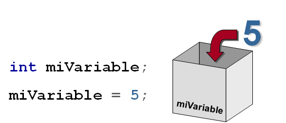
Variables e identificadores
Variables
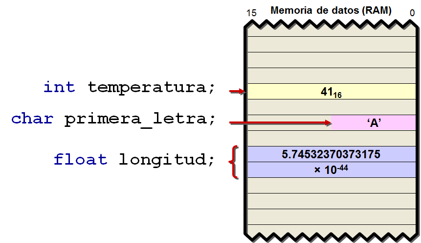
Variables e identificadores
Palabras reservadas
No pueden utilizarse para crear identificadores.
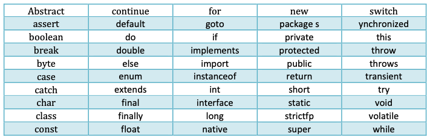
Variables e identificadores
Tipos de variables
- Variable de tipo primitivo o referenciado (punteros), según el valor que almacene.
- Variable o constante, según cambie o no su valor.
- Variable miembro o local, según su ámbito de actuación.
Variables e identificadores
Tipos de variables
public class TiposVariables {
// Constantes: No se puede modificar su valor
final double PI = 3.1415926536;
// Estáticas: Pertenece a la clase (global)
static int x;
static int obtenerX(int x){
// Local a la función
int valorAntiguo = x;
return valorAntiguo;
}
public static void main(String[] args) {
x = 5;
System.out.println(obtenerX(x));
}
}
Índice
- Introducción
- Salida de datos por pantalla
- Variables e identificadores
- Tipos de datos
- Lectura de datos desde teclado
- Operadores y expresiones
- Conversión de tipo
- Comentarios
- Estructuras selectivas
- Estructuras repetitivas
Tipos de datos
Son la especificación de los valores válidos para una variable, y de las operaciones que se pueden realizar con ellos.
Al crear la variable, especificamos su tipo de dato.
Tipos de datos
- Primitivos: Representan valores predefinidos en el lenguaje: enteros (short, int, long...), reales (float, double), boolean...
- Referenciados: Se definen con un nombre o referencia (puntero) que contiene la dirección en memoria de un valor o grupo de valores: Clases, interfaces, arrays...
Tipos de datos
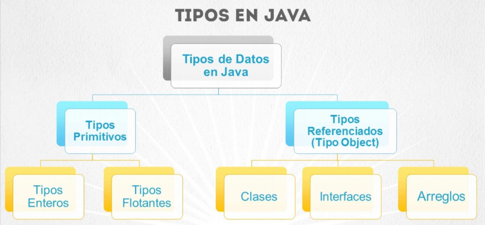
Tipos de datos
Rangos y valores por defecto
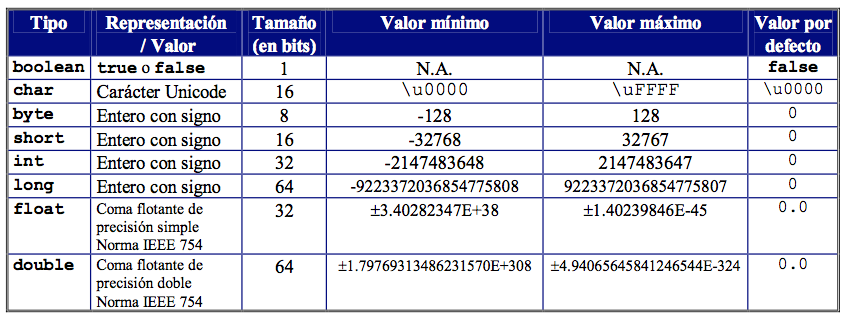
Tipos de datos
Ejemplos de declaraciones
boolean abierto = true;
byte repeticiones = 22;
char letra = ‘a’;
short pantalones = 22;
int asistentes = 22;
long poblacion = 22L;
float nota = 9.5f;
double precio = 22.55;
Tipos de datos
public static void main(String[] args) {
// Declaración de variables
int numero; // Guardará un entero
char letra; // Guardará un caracter
String nombre; // Guardará una caden ade texto
int vector[]; // Guardará 10 números enteros
Persona usuario; // Guardará un objeto de la clase Persona
System.out.println("Programa ejecutado");
}
Tipos de datos
public static void main(String[] args) {
// Declaración e inicialización de variables
boolean encontrado = true;
char letra = 'Z';
byte mes = 12;
int contador = 0;
float interes = 4.25e2f;
double pi = 3.1415926535897932384626433832795;
// Imprimir valores
System.out.println(encontrado); // true
System.out.println(letra); // Z
System.out.println(mes); // 12
System.out.println(contador); // 0
System.out.println(interes); // 425.0
System.out.println(pi); // 3.141592653589793
}
Tipos de datos
Información del tipo de dato
A continuación tienes un ejemplo para obtener información del tipo byte (Byte). En los ejercicios del tema harás el resto.
public static void main(String[] args) {
System.out.println("Tipo de dato Byte");
System.out.println("bits: " + Byte.SIZE); // 8
System.out.println("Bytes: " + Byte.BYTES); // 1
System.out.println("Valor mínimo: " + Byte.MIN_VALUE); // -128
System.out.println("Valor máximo: " + Byte.MAX_VALUE); // 127
}
Tipos de datos
Declaración e inicialización
- Declarar variable = reservar espacio en memoria RAM para alojar un dato.
- Por ello, se especifica su tipo de dato: int, long, double...
- Se puede declarar una variable en cualquier lugar del código.
- En la misma declaración, se puede inicializar (asignar un valor).
Tipos de datos
Declaración e inicialización
- Una variable se declara sólo 1 vez, pero su valor puede cambiar muchas veces.
- Si su valor no cambia nunca, estamos declarando una constante (se le añade "final" en la declaración).
Tipos de datos
Declaración e inicialización
public static void main(String[] args) {
// Declaración e inicialización
int numeroAlumnos = 15;
double radio = 3.14, importe = 102.95;
final double PI = 3.1415926536;
}
Tipos de datos
Declaración e inicialización
Se puede declarar la variable con "var" y el intérprete de Java le asignará el tipo de datos correspondiente al valor de su inicialización. NO RECOMENDABLE
public static void main(String[] args) {
// Declaración e inicialización
var numeroAlumnos = 15;
var radio = 3.14; // var no permite declaraciones compuestas (en la misma línea)
var importe = 102.95;
final var PI = 3.1415926536;
}
Tipos de datos
Declaración e inicialización
A las variables con tipo de dato char se les puede hacer la asignación mediante:
- El carácter en sí.
- El código Unicode del carácter.
- El valor decimal del carácter.
Tipos de datos
Declaración e inicialización
Tipo dato char
public static void main(String[] args) {
// Declaración
char simbolo1, simbolo2, simbolo3;
// Inicialización
simbolo1 = '&';
simbolo2 = '\u0040';
simbolo3 = 63;
System.out.println("simbolo1 = " + simbolo1); // &
System.out.println("simbolo2 = " + simbolo2); // @
System.out.println("simbolo3 = " + simbolo3); // ?
}
Tipos de datos
Declaración e inicialización
Tipo dato boolean
public static void main(String[] args) {
boolean variableLogica = true;
if(variableLogica){
System.out.println("La variable es verdadera");
}else{
System.out.println("La variable es falsa");
}
}
Tipos de datos
Declaración e inicialización
Tipo dato boolean
public static void main(String[] args) {
int edad = 12;
boolean adulto = edad >= 18;
if(adulto){
System.out.println("Eres mayor de edad");
}else{
System.out.println("Eres menor de edad");
}
}
Tipos de datos
Declaración e inicialización
Depuración de código

Tipos de datos
Tipos de datos referenciados
- Estructuras de datos: Arrays, listas, árboles...
- Objetos de clases
public class Main{
public static void main(String[] args){
Usuario usarioActivo;
int listaNotas[];
}
}
Índice
- Introducción
- Salida de datos por pantalla
- Variables e identificadores
- Tipos de datos
- Lectura de datos desde teclado
- Operadores y expresiones
- Conversión de tipo
- Comentarios
- Estructuras selectivas
- Estructuras repetitivas
Lectura de datos
Clase Scanner
Funciona en consola e IDEs. Mediante su función nextLine() se lee texto hasta pulsar ENTER.
// 1º) Importar la clase
import java.util.Scanner;
public class LeerTextoScanner {
public static void main(String[] args) {
// 2º) Declarar el objeto Scanner
Scanner s = new Scanner(System.in);
System.out.print("Dime tu nombre completo: ");
// 3º) Leer texto
String nombre = s.nextLine();
}
}
Lectura de datos
Convertir datos leídos
El texto leído se convierte mediante las funciones parseInt a entero o parseFloat a real.
// 1º) Importar la clase
import java.util.Scanner;
public class LeerNumeros {
public static void main(String[] args) {
// 2º) Declarar el objeto Scanner
Scanner s = new Scanner(System.in);
String respuesta;
System.out.print("Dime tu edad: ");
respuesta = s.nextLine();
int edad = Integer.parseInt(respuesta);
System.out.print("Dime tu estatura en metros: ");
respuesta = s.nextLine();
// OJO! Introducir decimal con punto: 1.87
float estatura = Float.parseFloat(respuesta);
System.out.printf("Edad: %d años. Estatura: %.2f metros.", edad, estatura);
}
}
Lectura de datos
Leer varios datos a la vez
Mediante next(), nextInt(), nextFloat()... se lee el tipo de dato correspondiente separado por espacios.
// 1º) Importar la clase
import java.util.Scanner;
public class LeerTextoScanner {
public static void main(String[] args) {
// 2º) Declarar el objeto Scanner
Scanner s = new Scanner(System.in);
System.out.print("Dime tu nombre, edad y estatura separados por espacio: ");
// 3º) Leer texto
String nombre = s.next();
int edad = s.nextInt();
// OJO! Introducir decimal con coma: 1,87 porque
// nextFloat intentará interpretar el número según
// la configuración regional del sistema (española).
float estatura = s.nextFloat();
}
}
Lectura de datos
Combinar métodos de lectura
Cuidado con combinar métodos next(), nextInt(), nextFloat()... con nextLine().
¿Funciona? Si al introducir la edad se pulsa el intro, en el nombre se guarda una cadena vacía.
// 1º) Importar la clase
import java.util.Scanner;
public class LecturaCombinada {
public static void main(String[] args) {
// 2º) Declarar el objeto Scanner
Scanner s = new Scanner(System.in);
System.out.println("Introduce tu edad:");
int edad = s.nextInt();
System.out.println("Introduce tu nombre:");
String nombre = s.nextLine();
System.out.println("Edad: " + edad);
System.out.println("Nombre: " + nombre);
}
}
Índice
- Introducción
- Salida de datos por pantalla
- Variables e identificadores
- Tipos de datos
- Lectura de datos desde teclado
- Operadores y expresiones
- Conversión de tipo
- Comentarios
- Estructuras selectivas
- Estructuras repetitivas
Operadores y expresiones
- Llevan a cabo operaciones sobre tipos de datos primitivos.
- Devuelven un tipo de dato primitivo.
- Una expresión es un conjunto de operadores y operandos que devuelve un resultado.
- Las expresiones combiandas con palabras reservadas forman las sentencias o instrucciones.
Operadores y expresiones
Ejemplo
- Expresión: i + 1
- Sentencia: suma = i + 1;
Operadores y expresiones
Operadores aritméticos
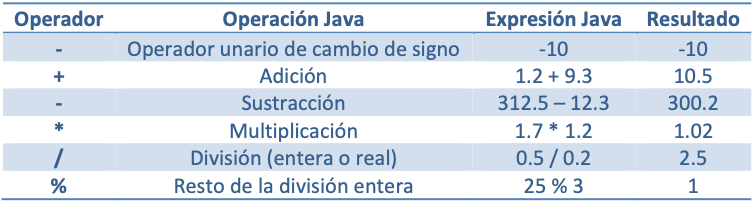
Operadores y expresiones
Operadores aritméticos
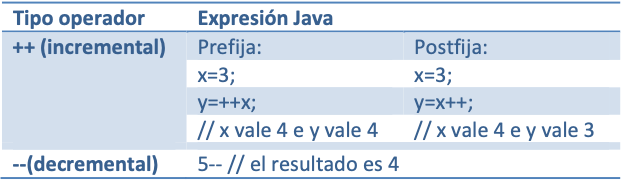
Operadores y expresiones
Operadores aritméticos
short x = 4;
int y = 5;
System.out.println("El valor de x es: " + x + " y el de y: " + y);
System.out.println("El resultado de x + y es: " + (x+y));
System.out.println("El resultado de x - y es: " + (x-y));
System.out.println("El resultado de x * y es: " + (x*y));
System.out.println("El resultado x / y (división entera) es: " + (x/y));
System.out.println("El resto de x / y es: " + (x%y));
Operadores y expresiones
Operadores aritméticos
Formatear la salida con printf para que tenga 2 decimales y ocupe 7 caracteres en total (incluida la coma).
¿Qué ocurre si se declaran n1 y n2 como int?
float n1 = 1, n2 = 3;
float resultado = n1 / n2;
System.out.println("Resultado: " + resultado);
System.out.printf("Resultado: %7.2f\n", resultado);
Operadores y expresiones
Operadores aritméticos
Diferencia entre operadores pre-incremento y post-incremento:
int x = 3, y;
int y = ++x;
System.out.println("x: " + x);
System.out.println("y: " + y);
x = 3;
y = x++;
System.out.println("x: " + x);
System.out.println("y: " + y);
Operadores y expresiones
Operadores de asignación
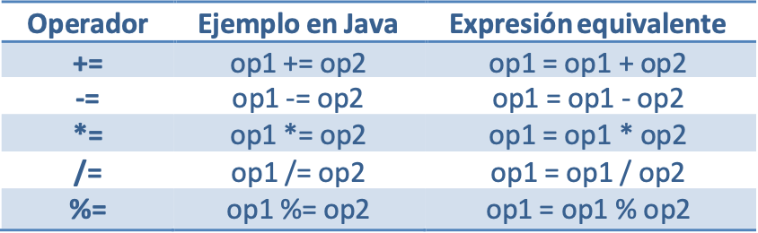
Operadores y expresiones
Operadores de asignación
int x=5, y=3;
System.out.printf("El valor de x es %d y el de y %d\n", x, y); // 5 y 3
x+=y;
System.out.println("Suma combinada de x + y = " + x); // 8
x-=y;
System.out.println("Resta combinada de x - y = " + x); // 5
x*=y;
System.out.println("Producto combinado de x * y = " + x); // 15
x/=y;
System.out.println("División combinada de x / y = " + x); // 5
x=y;
System.out.println("Módulo combinado de x % y = " + x); // 3
Operadores y expresiones
Operadores relacionales
Comparan valores y devuelven un valor booleano: true o false.
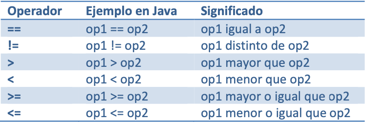
Operadores y expresiones
Operadores relacionales
Ojo, las cadenas (String) se comparan con su método .equals().
String nombre = "Manolo";
Scanner s = new Scanner(System.in);
System.out.println("Introduce el nombre de usuario: ");
String nombreUsuario = s.nextLine();
comprobacion = (nombre == nombreUsuario);
System.out.println(comprobacion); // false
comprobacion = nombre.equals(nombreUsuario);
System.out.println(comprobacion); // true
Operadores y expresiones
Operadores lógicos
Para realizar operaciones con valores booleanos. Devuelven otro booleano: true o false.
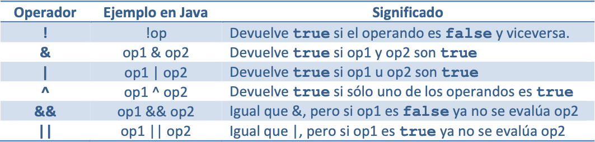
Operadores y expresiones
Operadores lógicos
Ejercicio: Diseñar un programa que devuelva si un número está dentro de un rango establecido entre los valores 0 y 10. Debe devolver true si está en el rango y false en caso contrario.
Operadores y expresiones
Operadores lógicos
import java.util.Scanner;
public class RangoBooleano {
public static void main(String[] args) {
Scanner s = new Scanner(System.in);
System.out.print("Introduce un número entre 0 y 10: ");
int numero = s.nextInt();
boolean rangoCorrecto = (numero >= 0) && (numero <= 10);
System.out.println("¿El número está en rango? " + rangoCorrecto);
}
}
Operadores y expresiones
Operador ternario
- Operador que evalúa una condición y devuelve un valor u otro.
- Sintáxis: variable = condición ? valor si V : valor si F;
- Ejemplo: String rdo = num%2 == 0 ? "par" : "impar";
Operadores y expresiones
Operador ternario
public class Ternario {
public static void main(String[] args) {
int num = 5;
String mensaje = (num%2 == 0) ? "par" : "impar";
System.out.printf("El número %d es %s.", num, mensaje);
}
}
Operadores y expresiones
Operadores lógicos
Ejercicio: Diseñar un programa de login que, a partir de unas variables booleanas previamente inicializadas, muestre diferentes mensajes en función de si no está logueado en el sistema, si sí lo está y si además de estarlo, es admin.
Operadores y expresiones
Operadores lógicos
public class LoginBooleano {
public static void main(String[] args) {
boolean logueado = true;
boolean admin = false;
String mensaje = "";
mensaje = logueado ? "Estás logueado en el sistema" : "No estás logueado en el sistema";
mensaje += admin ? " y eres admin." : " y no eres admin.";
System.out.println(mensaje);
}
}
Operadores y expresiones
Trabajo con cadenas
- length(): Devuelve la longitud de una cadena
- concat(): Une varias cadenas
- equals(): Compara cadenas
- equalsIgnoreCase(): Compara cadenas sin distinguir mayúsculas ni minúsculas
- substring(): Extrae una subcadena
- toUpperCase(): Convierte cadena a mayúsculas
- toLowerCase(): Convierte cadena a minúculas
Operadores y expresiones
Trabajo con cadenas
public class Cadenas {
public static void main(String[] args) {
String cad1 = "CICLO DAW", cad2 = "ciclo daw";
System.out.printf("La cadena cad1 es %s con %d caracteres.\n", cad1, cad1.length());
System.out.printf("La cadena cad2 es %s con %d caracteres.\n", cad2, cad2.length());
System.out.println("Concatenación: " + cad1.concat(cad2));
System.out.println("Comparación equals: " + cad1.equals(cad2));
System.out.println("Comparación equalsIgnoreCase: " + cad1.equalsIgnoreCase(cad2));
System.out.println("Extracción de subcadena: " + cad1.substring(6));
System.out.println("Minúsculas: " + cad1.toLowerCase());
System.out.println("Mayúsculas: " + cad2.toUpperCase());
}
}
Operadores y expresiones
Orden de precedencia de operadores

Índice
- Introducción
- Salida de datos por pantalla
- Variables e identificadores
- Tipos de datos
- Lectura de datos desde teclado
- Operadores y expresiones
- Conversión de tipo
- Comentarios
- Estructuras selectivas
- Estructuras repetitivas
Conversión de tipo
Conversión automática o implícita: La realiza el intérprete cuando asignamos un valor (de una variable o expresión) de menor tamaño a otro de mayor.
int numeroEntero = 10;
long numeroLong = 20L;
float numeroFloat = 5.0f;
// Conversión Implícita o automática (pequeña a grande)
numeroLong = numeroEntero; // 10
numeroFloat = numeroEntero; // 10.0
numeroFloat = numeroLong; // 10.0
// Revisar diapositiva 22 (en un float es posible almacenar más valores
// que un int o un long por operar en punto flotante
Conversión de tipo
Conversión explícita: Al hacer la conversión de un tipo con más bits a uno con menos bits. La realiza el programador mediante operador cast. Se puede producir pérdida de datos.
int numeroEntero = 10;
long numeroLong = 20L;
float numeroFloat = 5.0f;
// Conversión Explícita o casting (grande a pequeña)
numeroEntero = (int) numeroLong; // 20
numeroEntero = (int) numeroFloat; // 5
Conversión de tipo
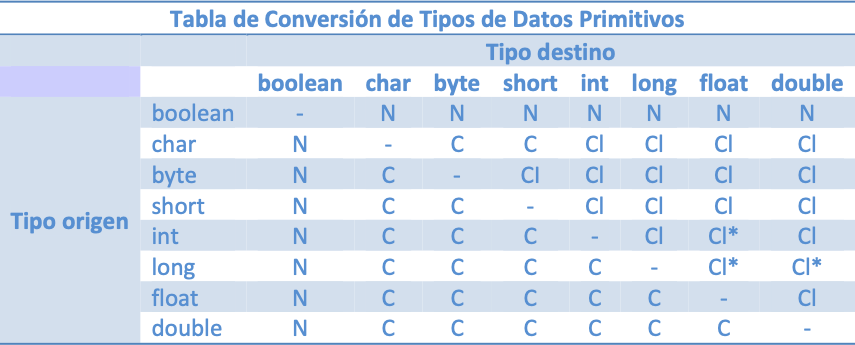
- N: Conversión no permitida.
- CI: Conversión implícita o automática.
- C: Casting de tipos o conversión explícita.
- *: Posible pérdida de datos. int usa 32 bits, float también, pero 8 son para el exponente.
Conversión de tipo
¿Qué hace el código? ¿Cómo se soluciona?
Con el casting podemos convertir un operando a float para que el resultado de la división sea decimal y no entero.
media = (float) (nota1 + nota2 + nota3) / 3;
int nota1, nota2, nota3;
float media;
nota1 = 4;
nota2 = 7;
nota3 = 8;
media = (nota1 + nota2 + nota3) / 3;
System.out.printf("Media: %.2f", media);
Índice
- Introducción
- Salida de datos por pantalla
- Variables e identificadores
- Tipos de datos
- Lectura de datos desde teclado
- Operadores y expresiones
- Conversión de tipo
- Comentarios
- Estructuras selectivas
- Estructuras repetitivas
Comentarios
Para entender qué hace nuestro código. Para nosotros mismos y al compartirlo con otros programadores. 3 tipos:
- // comentario de una línea
- /* comentario de varias líneas */
- /** comentario para Javadoc */
¡¡Ejercicios!!
Hacer relación de Operadores y expresiones.
Índice
- Introducción
- Salida de datos por pantalla
- Variables e identificadores
- Tipos de datos
- Lectura de datos desde teclado
- Operadores y expresiones
- Conversión de tipo
- Comentarios
- Estructuras selectivas
- Estructuras repetitivas
Estructuras selectivas
Las estructuras de control de flujo selectivas se emplean en los programas para ejecutar sentencias si se cumple una determinada condición. Vamos a ver las estructuras if-else y switch.
Estructuras selectivas
Estructura if-else
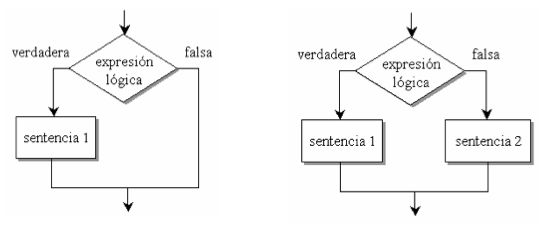
Estructuras selectivas
Estructura if-else
Estructura simple:
if(expresionLogica){
sentenciasSiVerdadero;
}
Estructura doble:
if(expresionLogica) {
sentenciasSiVerdadero;
}else{
sentenciasSiFalso;
}
Estructuras selectivas
Estructura if-else
Ejemplo:
if (a > b) {
System.out.println("a es mayor que b");
} else {
System.out.println("a no es mayor que b");
}
Estructuras selectivas
Estructura if-else
Si sólo lleva una sentencia en un bloque, se pueden omitir las llaves:
if (a > b)
System.out.println("a es mayor que b");
else
System.out.println("a no es mayor que b");
Estructuras selectivas
Estructura if-else
Ejercicio: Diseña un programa para determinar si un número introducido por teclado es par o impar. Muy importante utilizar comentarios.
Estructuras selectivas
Estructura if-else
public class ParImpar {
public static void main(String[] args) {
Scanner s = new Scanner(System.in);
int num = Integer.parseInt(s.nextLine());
// Es par si el resto de dividirlo entre 2 es 0
int resto = num % 2;
if(resto == 0){
System.out.printf("El número %d es par.", num);
}else{
System.out.printf("El número %d es impar.", num);
}
}
}
Estructuras selectivas
Estructura if-else
Ejercicio: Diseña un programa para determinar la nota de un alumno (insuficiente, suficiente, bien, notable y sobresaliente) a partir del valor numérico.
Estructuras selectivas
Estructura if-else
public class Calificaciones {
public static void main(String[] args) {
Scanner s = new Scanner(System.in);
System.out.println("Introduce la nota:");
float nota = Float.parseFloat(s.nextLine());
if(nota<0 || nota>10){
System.out.println("Nota no válida, fuera de rango.");
}else{
if(nota<5){
System.out.println("Insuficiente");
}else{
if(nota<6){
System.out.println("Suficiente");
}else{
if(nota<7){
System.out.println("Bien");
}else{
if(nota<8.5){
System.out.println("Notable");
}else{
System.out.println("Sobresaliente");
}
}
}
}
}
}
}
Estructuras selectivas
Estructura if-else
public class Calificaciones2 {
public static void main(String[] args) {
Scanner s = new Scanner(System.in);
System.out.println("Introduce la nota:");
float nota = Float.parseFloat(s.nextLine());
if(nota<0 || nota>10){
System.out.println("Nota no válida, fuera de rango.");
}else if(nota<5){
System.out.println("Insuficiente");
}else if(nota<6){
System.out.println("Suficiente");
}else if(nota<7){
System.out.println("Bien");
}else if(nota<8.5){
System.out.println("Notable");
}else{
System.out.println("Sobresaliente");
}
}
}
Estructuras selectivas
Estructura Switch Statement
El switch clásico (ya admite cadenas)
switch(variable) {
case valor1:
sentencias;
break;
case valor2:
sentencias;
break;
...
default:
sentencias;
}
Estructuras selectivas
Estructura Switch Statement
Completa el ejemplo:
var s = new Scanner(System.in);
System.out.println("Introduce el número del mes: ");
int mes = Integer.parseInt(s.nextLine());
String nombreDelMes = "";
switch(mes){
case 1:
nombreDelMes = "enero";
break;
case 2:
nombreDelMes = "febrero";
break;
// COMPLETA EL CÓDIGO QUE FALTA AQUÍ
}
System.out.println("Mes " + mes + ": " + nombreDelMes);
Estructuras selectivas
Estructura Switch Statement
Ejemplo con cadenas:
Scanner s = new Scanner(System.in);
System.out.println("Introduce el mes: ");
String mes = s.nextLine();
// Muestra eventos pendientes hasta el final del trimestre
switch (mes){
case "enero":
case "febrero":
System.out.println("Evaluación 2º trimestre");
case "marzo":
System.out.println("Fin 2º trimestre");
break;
case "abril":
case "mayo":
System.out.println("Evaluacíon 3er trimestre");
case "junio":
System.out.println("Recuperación 3er trimestre");
System.out.println("Fin 3er trimestre");
break;
default:
System.out.println("Opción por defecto");
}
Estructuras selectivas
Estructura Switch Expression
Valores múltiples separados por comas y devolución de valores mediante flecha (Java 12) o yield (Java 13)
switch(variable) {
case valor1 -> sentencias;
case valor2 -> sentencias;
...
default -> sentencias;
}
Estructuras selectivas
Estructura Switch Expression
Ejemplo sin asignación de valores
int numMes = 5;
// Ejecutar sentencias (no necesario break)
switch(numMes) {
case 9, 10, 11, 12 -> System.out.println("1er trimestre");
case 1, 2, 3 -> System.out.println("2o trimestre");
case 4, 5, 6 -> {
// Ejemplo bloque multilínea
System.out.println("Último trimestre! :)");
System.out.println("3er trimestre");
}
default -> System.out.println("No hay clase");
}
Estructuras selectivas
Estructura Switch Expression
Ejemplo asignando valores a variable
String mes = "may";
// Asignar valores con -> o yield (si hay bloque)
int trimestre = switch(mes) {
case "sep", "oct", "nov", "dic" -> 1;
case "ene", "feb", "mar" -> 2;
case "abr", "may", "jun" -> {
// Ejemplo bloque multilínea (devuelve con yield)
System.out.println("Último trimestre! :)");
yield 3;
}
default -> -1;
};
System.out.println("Trimestre número " + trimestre);
Estructuras selectivas
Estructura Switch Expression
Ejercicio: Modifica el ejemplo de los 12 meses para utilizar una estructura switch expression en la que a partir del número del mes devuelva el nombre del mismo mediante flecha o yield.
Estructuras selectivas
Estructura switch
Ejercicio: Diseña un programa que pida el número de mes y devuelva la estación meteorológica a la que corresponde. Variante: Cambia el programa para que en vez de pedir el número del mes, se pida el nombre del mes.
Estructuras selectivas
Estructura switch
Ejercicio: Diseña un programa para calcular el área del cuadrado, rectángulo y triángulo. Realiza un menú para que el usuario seleccione la figura que le interese. Utiliza la estructura switch.
Estructuras selectivas
Estructura switch
public static void main(String[] args) { // Método main
var s = new Scanner(System.in);
System.out.println("CÁLCULO DE ÁREAS");
System.out.println("===============");
System.out.println("1. Cuadrado");
System.out.println("2. Rectángulo");
System.out.println("3. Triángulo");
System.out.print("\nElija una opción (1-3): ");
int opcion = Integer.parseInt(s.nextLine());
double lado;
double base;
double altura;
switch (opcion) {
case 1:
System.out.print("\nIntroduzca el lado del cuadrado en cm: ");
lado = Double.parseDouble(s.nextLine());
System.out.println("\nEl área del cuadrado es " + (lado * lado) + " cm²");
break;
case 2:
System.out.print("\nIntroduzca la base del rectángulo en cm: ");
base = Double.parseDouble(s.nextLine());
System.out.print("Introduzca la altura del rectángulo en cm: ");
altura = Double.parseDouble(s.nextLine());
System.out.println("El área del rectángulo es " + (base * altura) + " cm²");
break;
case 3:
System.out.print("\nIntroduzca la base del triángulo en cm: ");
base = Double.parseDouble(s.nextLine());
System.out.print("Introduzca la altura del triángulo en cm: ");
altura = Double.parseDouble(s.nextLine());
System.out.println("El área del triángulo es " + ((base * altura) / 2) + " cm²");
break;
default:
System.out.println("\nLo siento, la opción elegida no es correcta.");
}
}
¡¡Ejercicios!!

Hacer relación de Estructuras selectivas.
Índice
- Introducción
- Salida de datos por pantalla
- Variables e identificadores
- Tipos de datos
- Lectura de datos desde teclado
- Operadores y expresiones
- Conversión de tipo
- Comentarios
- Estructuras selectivas
- Estructuras repetitivas
Estructuras repetitivas
Las estructuras de control de flujo repetitivas se emplean en los programas para ejecutar sentencias de forma reiterada. Vamos a ver las estructuras o bucles for, while y do-while.
Estructuras repetitivas
Bucle for

Estructuras repetitivas
Bucle for
Sintáxis:
for (inicio; termino; iteracion){
sentencias;
}
Estructuras repetitivas
Bucle for
Ejemplo:
System.out.println("Tabla de multiplicar del 5");
for (int i=0; i<=10; i++) {
System.out.println(5 + " * " + i + " = " + 5 * i);
}
Estructuras repetitivas
Bucle for
Ejemplo:
System.out.println("Contando hasta el 10");
for (int i=0; i<=10; i++) {
System.out.println("i = " + i);
}
System.out.println("Contando hacia atrás");
for (int i=10; i>=0; i--) {
System.out.println("i = " + i);
}
Estructuras repetitivas
Bucle for-in / foreach
Para recorrer arrays de forma automática:
String semana[] = {"lunes", "martes", "miércoles", "jueves", "viernes", "sábado", "domingo"};
for (String dia : semana){
System.out.println("día = " + dia);
}
Estructuras repetitivas
Bucle while
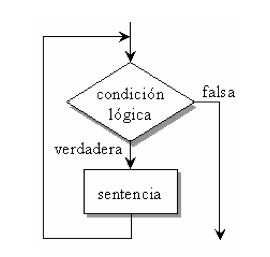
Estructuras repetitivas
Bucle while
Sintáxis:
[inicializacion;]
while (expresionLogica) {
sentencias;
[iteracion;]
}
Estructuras repetitivas
Bucle while
Ejemplo:
System.out.println("Tabla de multiplicar del 5");
int i=0; // inicialización
while(i<=10) {
System.out.println(5 + " * " + i + " = " + 5 * i);
i++; // iteración
}
Estructuras repetitivas
Bucle while
¿Qué hace este código?
boolean bloqueado = false, logueado = false;
String usuario = "admin", pass = "superPass1234";
int intentos = 3;
Scanner s = new Scanner(System.in);
while(!bloqueado && !logueado && intentos>0){
System.out.print("Bienvenido, introduzca su usuario: ");
String entradaUsuario = s.nextLine();
System.out.print("Introduzca su contraseña: ");
String entradaPass = s.nextLine();
if(entradaUsuario.equals(usuario) && entradaPass.equals(pass)){
logueado = true;
}else{
intentos--;
System.out.printf("\nDatos incorrectos. Le quedan %d intentos.\n", intentos);
if(intentos == 0) bloqueado = true;
}
}
if(logueado) System.out.println("Bienvenido " + usuario);
if(bloqueado) System.out.println("Su usuario ha sido bloqueado");
Estructuras repetitivas
Bucle do-while
Sintáxis:
[inicializacion;]
do{
sentencias;
[iteracion;]
} while(expresionLogica);
Estructuras repetitivas
Bucle do-while
Ejemplo:
System.out.println("Tabla de multiplicar del 5");
int i=0; // inicialización
do{
System.out.println(5 + " * " + i + " = " + 5 * i);
i++; // iteración
}while(i<=10);
Estructuras repetitivas
Bucle do-while
¿Qué hace este código?
boolean bloqueado = false, logueado = false;
String usuario = "admin", pass = "superPass1234";
int intentos = 3;
Scanner s = new Scanner(System.in);
do{
System.out.print("Bienvenido, introduzca su usuario: ");
String entradaUsuario = s.nextLine();
System.out.print("Introduzca su contraseña: ");
String entradaPass = s.nextLine();
if(entradaUsuario.equals(usuario) && entradaPass.equals(pass)){
logueado = true;
}else{
intentos--;
System.out.printf("\nDatos incorrectos. Le quedan %d intentos.\n", intentos);
if(intentos == 0) bloqueado = true;
}
}while(!bloqueado && !logueado && intentos>0);
if(logueado) System.out.println("Bienvenido " + usuario);
if(bloqueado) System.out.println("Su usuario ha sido bloqueado");
Estructuras repetitivas
¿Cuándo utilizar un bucle u otro?
- for, sabemos el número de veces que se van a repetir las instrucciones.
- while, las repeticiones dependen de algo interno al bucle que no controlamos. Ejemplo: leer opción de menú de usuario.
- do-while, igual que el while, sólo que necesitamos que el cuerpo del bucle se ejecute al menos 1 vez.
Estructuras repetitivas
Estructuras de salto
- break y continue.
- Rompen el esquema de programación estructurada haciendo que el flujo de ejecución "salte" a otra parte.
- Hacen que el código sea más difícil de comprender y reutilizar, por lo que se suelen evitar.
- Justificadas en determinados casos para ganar eficiencia. Ejemplo: Al encontrar elemento buscado en un array, no seguir recorriéndolo.
Estructuras repetitivas
Estructuras de salto
break termina la ejecución del bucle, saliendo de él.
for(int contador=0; contador<=10; contador++){
if(contador == 7) break;
System.out.println("Contador: " + contador);
}
System.out.println("Fin de programa");
Estructuras repetitivas
Estructuras de salto
continue salta a la siguiente iteración del bucle.
System.out.println("Imprimir números pares del 1 al 10.");
for(int contador=1; contador<=10; contador++){
if(contador % 2 != 0) continue;
System.out.printf("El %d es par.\n", contador);
}
System.out.println("Fin de programa");
Estructuras repetitivas
Estructuras de salto
Ejemplo:
String usuarios[] = {"Pablo", "Jose Manuel", "Ana", "Jesús", "Adrián", "Manu", "Marcos", "Andrés", "Sergio", "Alberto",
"Alexis", "Jose Luis", "Izan", "David", "Alejandro", "Flor", "Pedro"};
boolean logueado = false;
Scanner s = new Scanner(System.in);
System.out.println("Bienvenido al programa");
System.out.print("Introduce tu usuario: ");
String user = s.nextLine();
for (String userTemp : usuarios) {
if (userTemp.equalsIgnoreCase(user)) {
logueado = true;
break; // terminamos el bucle (lo hemos encontrado)
}
}
if(logueado)
System.out.println("Bienvenido " + user);
else
System.out.println("Lo sentimos, no encontramos su usuario");
Repasar
- Java Tutorial
- Ejercicios interactivos (hasta Java Loops)
Tips de la presentación
¿Imprimir en PDF?
- Clic aquí
- CTRL/CMD + P
- Guardar como PDF
Navegar por las diapositivas
- Pulsa ESC
- Clic a la que quieras ir
A trabajar...
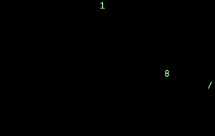